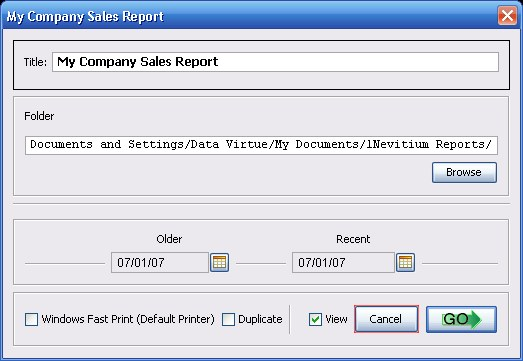

|
|
Reports
All documents generated by Nevitium are PDF files. A PDF is a file that stores your document exactly how it will print. You can view and print PDF files on any system with a number of programs (freely available); the most popular being Adobe Acrobat Reader. It is recommended that you use Adobe Reader version 5.0 or greater to view the documents generated by Nevitium. For more information about viewing and printing PDF files from Nevitium see Output Settings. Do NOT use Adobe Reader 8.0 yet; it is in very bad shape right now. Nevitium will not find version 8.0 because it is installed in different directories and has a different executable than the previous versions over the last ten - twelve years. It is not recommended for business use. Open Invoice Report Sales Report COGS Report Revenue Report Inventory Report Inventory Reorder Report Customer List Customer Phone List Supplier List Supplier Phone List
Report Dialog (Window)  Title This will display at the top of your reports. This is ignored for invoices. Folder This is the location of the PDF file generated by Nevitium. The file name is selected automatically to speed workflow, you can rename them after they are generated if you wish. Click the Browse button to locate the proper folder. This default folder can be configured in Settings. Windows Fast Print This sends the document directly to the default Windows printer without opening it first in Adobe Reader. This uses Adobe DDE to print so you still need Adobe Reader to utilize this option. Duplicate The Duplicate option is for printing duplicate invoices with Windows Fast Print only. This option is ignored on reports. View This displays the document in the configured PDF reader after being generated by Nevitium. Cancel Prevents a PDF from being generated/printed. On the invoice screen this DOES NOT cancel the posting of the invoice.
|